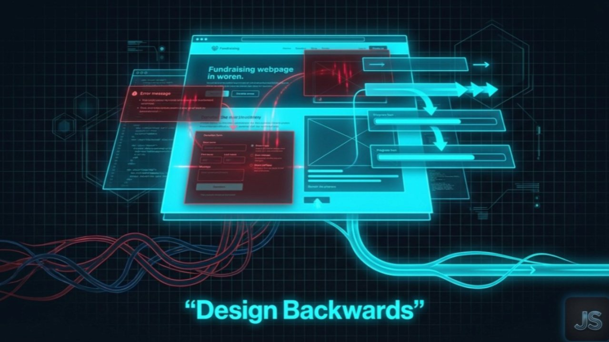

The Creative Shift May 19, 2026
Part III: Building an AI Modular Stack of Invisible Experts
Most people say they “used AI.”
I built a boardroom of experts and mentors.
TreeRaise was not shaped by one prompt or one tool.
It was shaped by a modular stack of AI-driven expert lenses designed to challenge assumptions, surface blind spots, and compress research timelines without compromising depth.
AI was not the creator.
It was the accelerator.
Why a Single Prompt Is Useless
A single general AI interaction produces general thinking.
General thinking produces average brands.
If you want differentiated architecture, you need structured tension.
So instead of asking one broad question, I built modular expert layers:
Behavioral science.
Marketing psychology.
Visual systems thinking.
Cultural segmentation.
Content automation.
Growth modeling.
Each module stress-tested decisions from a different angle.
The Invisible Board of Advisors
Think of it this way:
Instead of hiring one strategist, I built a synthetic advisory room.
One lens examined friction and decision fatigue.
Another examined persuasion triggers and commitment bias.
Another evaluated narrative gravity and brand authority.
Another pressure-tested visual cohesion and symbolic alignment.
Each layer had a defined role.
Each role challenged the others.
Each module had a QC expert to make sure it met all metrics of output
This is how you avoid AI hallucinating surface-level strategy.
You constrain it with structure.
Deep Research at Scale
I used AI not for generic summaries.
I used it for:
State-level demographic research
Rural vs suburban vs urban behavioral drivers
Cultural identity markers
Education system funding pain points
Environmental engagement psychology
Donation motivation differences by region
Research that would normally take weeks compressed into days.
But speed was not the advantage.
Synthesis was.
When you overlay demographic data with behavioral science and brand narrative, patterns emerge.
Those patterns informed positioning before any campaign was written.
From Insight to Architecture
The modular stack translated research into:
Messaging pillars
Donation scripts
Segmented positioning
Impact framing
UX sequence decisions
Content themes
Trust signaling systems
AI did not replace thinking.
It amplified structured thinking.
It allowed me to test hypotheses faster and discard weak assumptions earlier.
That changes build velocity dramatically.
AI as Constraint, Not Magic
The real danger of AI is laziness.
If you treat it as an oracle, it will give you average answers confidently.
If you treat it as a structured research engine with defined expert roles, it becomes powerful.
TreeRaise was built by:
Defining roles.
Constraining output.
Challenging assumptions
Cross-referencing modules.
This was not prompt engineering.
It was system engineering.
One for the Road
AI is not a shortcut.
It is a multiplier.
But it only multiplies what you structure.
If your thinking is shallow, AI scales shallow thinking.
If your architecture is modular and disciplined, AI accelerates depth.
Next week, I will break down how that research translated into segmented behavioral messaging across rural, suburban, and urban communities, and why generic persuasion destroys conversion.
The Creative Shift continues.

Want this kind of thinking on your brand?
The Creative Shift is the thinking behind the client work. Book a call, or read the original on LinkedIn.